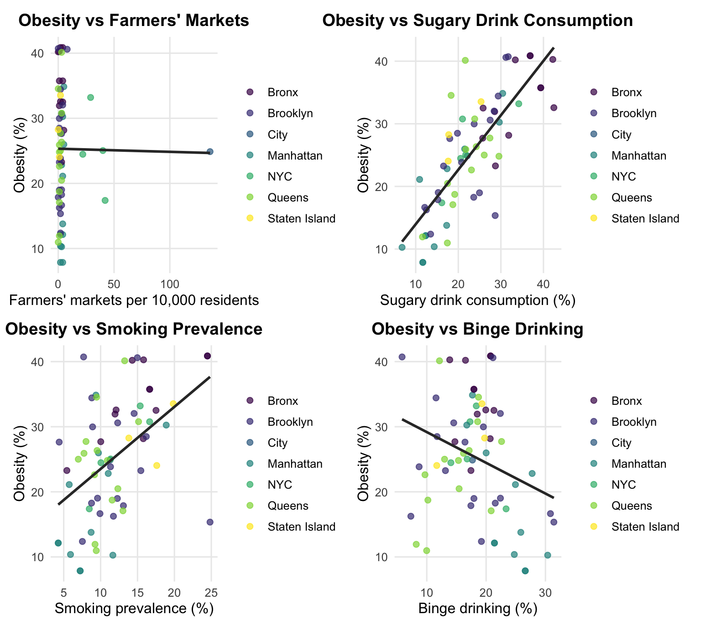
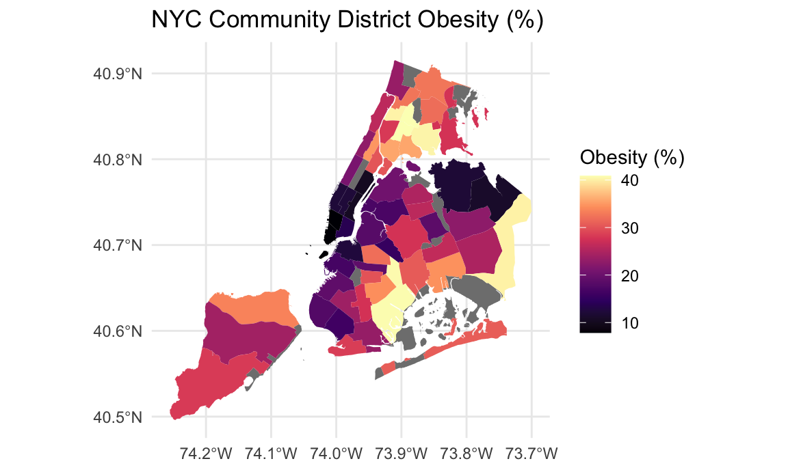
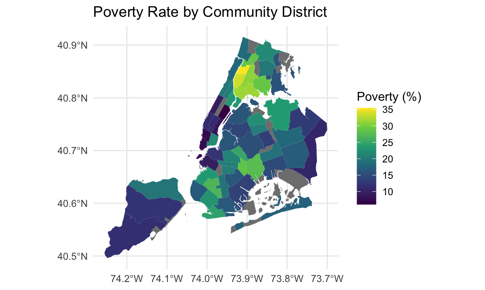
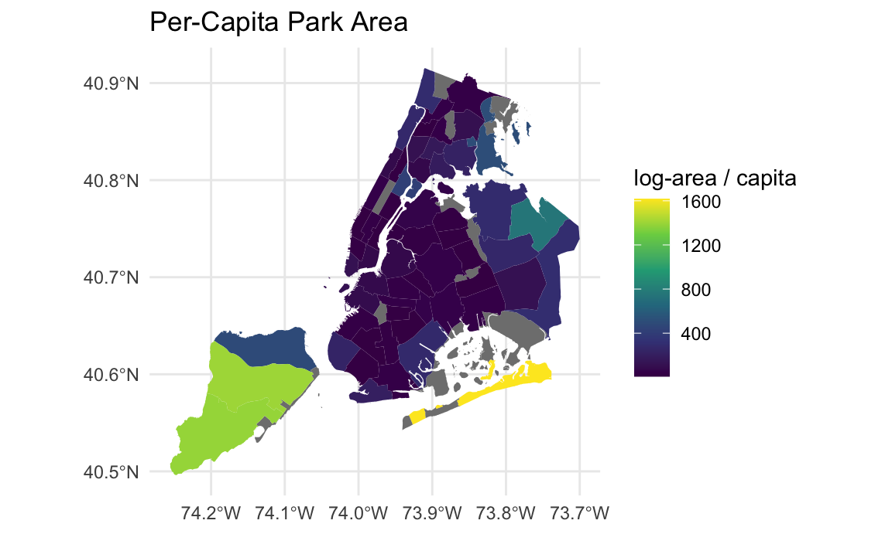

df_parks <- read_csv("data/Parks_Properties_20251104.csv") |>
select(ACQUISITIONDATE: multipolygon) |>
clean_names() ## Rows: 2054 Columns: 34
## ── Column specification ──────────────────────────────────────────────────────────────
## Delimiter: ","
## chr (22): ACQUISITIONDATE, ADDRESS, BOROUGH, CLASS, COUNCILDISTRICT, DEPARTM...
## dbl (1): PRECINCT
## num (7): ACRES, COMMUNITYBOARD, GISOBJID, NYS_ASSEMBLY, NYS_SENATE, OBJECTI...
## lgl (4): PERMIT, PIP_RATABLE, RETIRED, WATERFRONT
##
## ℹ Use `spec()` to retrieve the full column specification for this data.
## ℹ Specify the column types or set `show_col_types = FALSE` to quiet this message.df_chp <- read_excel("data/2022-chp-pud.xlsx", sheet = "CHP_all_data", skip = 1) |>
clean_names()## New names:
## • `lower_95CL` -> `lower_95CL...16`
## • `upper_95CL` -> `upper_95CL...17`
## • `NYC_Comparison` -> `NYC_Comparison...18`
## • `lower_95CL` -> `lower_95CL...20`
## • `upper_95CL` -> `upper_95CL...21`
## • `NYC_Comparison` -> `NYC_Comparison...22`
## • `NYC_comparison` -> `NYC_comparison...24`
## • `NYC_Comparison` -> `NYC_Comparison...26`
## • `lower_95CL` -> `lower_95CL...28`
## • `upper_95CL` -> `upper_95CL...29`
## • `NYC_Comparison` -> `NYC_Comparison...30`
## • `lower_95CL` -> `lower_95CL...32`
## • `upper_95CL` -> `upper_95CL...33`
## • `NYC_Comparison` -> `NYC_Comparison...34`
## • `lower_95CL` -> `lower_95CL...36`
## • `upper_95CL` -> `upper_95CL...37`
## • `NYC_Comparison` -> `NYC_Comparison...38`
## • `lower_95CL` -> `lower_95CL...41`
## • `upper_95CL` -> `upper_95CL...42`
## • `NYC_Comparison` -> `NYC_Comparison...43`
## • `lower_95CL` -> `lower_95CL...45`
## • `upper_95CL` -> `upper_95CL...46`
## • `NYC_Comparison` -> `NYC_Comparison...47`
## • `lower_95CL` -> `lower_95CL...50`
## • `upper_95CL` -> `upper_95CL...51`
## • `NYC_Comparison` -> `NYC_Comparison...52`
## • `lower_95CL` -> `lower_95CL...55`
## • `upper_95CL` -> `upper_95CL...56`
## • `NYC_Comparison` -> `NYC_Comparison...57`
## • `NYC_Comparison_Pvalues` -> `NYC_Comparison_Pvalues...58`
## • `lower_95CL` -> `lower_95CL...63`
## • `upper_95CL` -> `upper_95CL...64`
## • `NYC_Comparison` -> `NYC_Comparison...65`
## • `lower_95CL` -> `lower_95CL...68`
## • `upper_95CL` -> `upper_95CL...69`
## • `NYC_Comparison` -> `NYC_Comparison...70`
## • `NYC_comparison` -> `NYC_comparison...73`
## • `lower_95CL` -> `lower_95CL...75`
## • `upper_95CL` -> `upper_95CL...76`
## • `NYC_Comparison` -> `NYC_Comparison...77`
## • `NYC_Comparison` -> `NYC_Comparison...81`
## • `NYC_Comparison` -> `NYC_Comparison...83`
## • `NYC_Comparison` -> `NYC_Comparison...86`
## • `lower_95CL` -> `lower_95CL...88`
## • `upper_95CL` -> `upper_95CL...89`
## • `NYC_Comparison` -> `NYC_Comparison...90`
## • `lower_95CL` -> `lower_95CL...93`
## • `upper_95CL` -> `upper_95CL...94`
## • `NYC_Comparison` -> `NYC_Comparison...95`
## • `lower_95CL` -> `lower_95CL...98`
## • `upper_95CL` -> `upper_95CL...99`
## • `NYC_Comparison` -> `NYC_Comparison...100`
## • `NYC_Comparison_Pvalues` -> `NYC_Comparison_Pvalues...101`
## • `lower_95CL` -> `lower_95CL...104`
## • `upper_95CL` -> `upper_95CL...105`
## • `NYC_Comparison` -> `NYC_Comparison...106`
## • `NYC_Comparison_Pvalues` -> `NYC_Comparison_Pvalues...107`
## • `lower_95CL` -> `lower_95CL...110`
## • `upper_95CL` -> `upper_95CL...111`
## • `NYC_Comparison` -> `NYC_Comparison...112`
## • `NYC_Comparison_Pvalues` -> `NYC_Comparison_Pvalues...113`
## • `lower_95CL` -> `lower_95CL...116`
## • `upper_95CL` -> `upper_95CL...117`
## • `NYC_Comparison` -> `NYC_Comparison...118`
## • `NYC_Comparison_Pvalues` -> `NYC_Comparison_Pvalues...119`
## • `lower_95CL` -> `lower_95CL...122`
## • `upper_95CL` -> `upper_95CL...123`
## • `NYC_Comparison` -> `NYC_Comparison...124`
## • `NYC_Comparison_Pvalues` -> `NYC_Comparison_Pvalues...125`
## • `lower_95CL` -> `lower_95CL...128`
## • `upper_95CL` -> `upper_95CL...129`
## • `NYC_Comparison` -> `NYC_Comparison...130`
## • `NYC_Comparison_Pvalues` -> `NYC_Comparison_Pvalues...131`
## • `lower_95CL` -> `lower_95CL...134`
## • `upper_95CL` -> `upper_95CL...135`
## • `NYC_Comparison` -> `NYC_Comparison...136`
## • `NYC_Comparison_Pvalues` -> `NYC_Comparison_Pvalues...137`
## • `lower_95CL` -> `lower_95CL...139`
## • `upper_95CL` -> `upper_95CL...140`
## • `NYC_Comparison` -> `NYC_Comparison...141`
## • `lower_95CL` -> `lower_95CL...143`
## • `upper_95CL` -> `upper_95CL...144`
## • `NYC_Comparison` -> `NYC_Comparison...145`
## • `lower_95CL` -> `lower_95CL...150`
## • `upper_95CL` -> `upper_95CL...151`
## • `NYC_Comparison` -> `NYC_Comparison...152`
## • `NYC_Comparison_Pvalues` -> `NYC_Comparison_Pvalues...153`
## • `lower_95CL` -> `lower_95CL...156`
## • `upper_95CL` -> `upper_95CL...157`
## • `NYC_Comparison` -> `NYC_Comparison...158`
## • `NYC_Comparison_Pvalues` -> `NYC_Comparison_Pvalues...159`
## • `lower_95CL` -> `lower_95CL...162`
## • `upper_95CL` -> `upper_95CL...163`
## • `NYC_Comparison` -> `NYC_Comparison...164`
## • `NYC_Comparison_Pvalues` -> `NYC_Comparison_Pvalues...165`
## • `lower_95CL` -> `lower_95CL...168`
## • `upper_95CL` -> `upper_95CL...169`
## • `NYC_Comparison` -> `NYC_Comparison...170`
## • `NYC_Comparison_Pvalues` -> `NYC_Comparison_Pvalues...171`
## • `lower_95CL` -> `lower_95CL...177`
## • `upper_95CL` -> `upper_95CL...178`
## • `NYC_Comparison` -> `NYC_Comparison...179`
## • `NYC_Comparison_Pvalues` -> `NYC_Comparison_Pvalues...180`
## • `lower_95CL` -> `lower_95CL...182`
## • `upper_95CL` -> `upper_95CL...183`
## • `NYC_comparison` -> `NYC_comparison...184`
## • `lower_95CL` -> `lower_95CL...187`
## • `upper_95CL` -> `upper_95CL...188`
## • `NYC_comparison` -> `NYC_comparison...189`
## • `NYC_Comparison` -> `NYC_Comparison...192`
## • `lower_95CL` -> `lower_95CL...194`
## • `upper_95CL` -> `upper_95CL...195`
## • `NYC_Comparison` -> `NYC_Comparison...196`df_prem_death <- read_excel("data/2022-chp-pud.xlsx", sheet = "Cause_of_premature_death") |>
clean_names()
df_cancer <- read_excel("data/2022-chp-pud.xlsx", sheet = "Cancer_data_ranked") |>
clean_names()df_parks <-
df_parks |>
rename(id = communityboard)
df_parks_commubity <-
df_parks |>
mutate(
acres = as.numeric(acres),
id = as.factor(id)
) |>
group_by(id) |>
summarise(
sum_acres = sum(acres, na.rm = TRUE),
mean_acres = mean(acres, na.rm = TRUE),
n_parks = n()
) |>
filter(sum_acres > 0) |> # only use observations with positive areas
mutate(
id = as.character(id),
n_split = lengths(strsplit(id, ","))
) |>
separate_rows(id, sep = ",") |>
mutate(
id = trimws(id),
sum_acres_adj = sum_acres / n_split,
n_parks_adj = n_parks / n_split
) |>
group_by(id) |>
summarise(
sum_acres = sum(sum_acres_adj, na.rm = TRUE),
n_parks = sum(n_parks_adj, na.rm = TRUE),
mean_acres = sum_acres / n_parks
)
df_parks_borough <-
df_parks |>
filter(
borough == c("B", "M", "Q", "R", "X")
) |>
mutate(
borough = as.factor(borough),
acres = as.numeric(acres)
) |>
group_by(borough) |>
summarise(
sum_acres = sum(acres, na.rm = TRUE),
mean_acres = mean(acres, na.rm = TRUE),
n_parks = n()
) |>
rename(id = borough)## Warning: There was 1 warning in `filter()`.
## ℹ In argument: `borough == c("B", "M", "Q", "R", "X")`.
## Caused by warning in `borough == c("B", "M", "Q", "R", "X")`:
## ! longer object length is not a multiple of shorter object lengthdf_parks_all_dist <-
bind_rows(df_parks_borough, df_parks_commubity)# df_parks_split <-
# df_parks_all_dist |>
# mutate(
# id = as.character(id),
# n_split = lengths(strsplit(id, ","))
# ) |>
# separate_rows(id, sep = ",") |>
# mutate(
# id = trimws(id),
# sum_acres_adj = sum_acres / n_split,
# n_parks_adj = n_parks / n_split
# ) |>
# group_by(id) |>
# summarise(
# sum_acres = sum(sum_acres_adj, na.rm = TRUE),
# n_parks = sum(n_parks_adj, na.rm = TRUE),
# mean_acres = sum_acres / n_parks
# )# get rid of reliability index
df_chp_clean <- df_chp |>
select(-contains("95cl"), -contains("nyc_comparison"), -contains("reliability_note")) |>
mutate(
id = recode(as.character(id),
"1" = "M",
"2" = "X",
"3" = "B",
"4" = "Q",
"5" = "R"),
)
df_chp_clean <- df_chp_clean |>
mutate(uninsured = as.numeric(uninsured),
uninsured = round(uninsured, 2))## Warning: There was 1 warning in `mutate()`.
## ℹ In argument: `uninsured = as.numeric(uninsured)`.
## Caused by warning:
## ! NAs introduced by coercion# create a variable map for df_chp_clean
var_map <- tribble(
~variable, ~category,
"id", "geo",
"borough", "geo",
"name", "geo",
"overall_pop", "population",
"race_white", "demographic_race",
"race_black", "demographic_race",
"race_latino", "demographic_race",
"race_asian", "demographic_race",
"race_other", "demographic_race",
"age0to17", "demographic_age",
"age18to24", "demographic_age",
"age25to44", "demographic_age",
"age45to64", "demographic_age",
"age65plus", "demographic_age",
"born_outside_us", "demographic_migration",
"ltd_eng_prof", "demographic_language",
"edu_did_not_complete_hs", "SES_education",
"edu_hs_grad_some_college", "SES_education",
"edu_college_degree_and_higher","SES_education",
"poverty", "SES_economic",
"unemployment", "SES_economic",
"rent_burden", "SES_economic",
"school_absent", "education_outcome",
"on_time_hs_grad", "education_outcome",
"homes_ac", "housing_environment",
"homes_no_defects", "housing_environment",
"air_pollution", "physical_environment",
"ratio_bodega_supermarket", "food_environment",
"farmers_markets", "food_environment",
"helpful_neighbor", "social_environment",
"assault_hosp", "safety_violence",
"jail_incarceration", "safety_justice",
"pedestrian_hosp", "safety_transport",
"physical_activity", "behavior",
"fruit_veg", "behavior",
"sugary_drink", "behavior",
"smoking", "behavior",
"binge_drink", "behavior",
"uninsured", "access_care",
"unmet_med_care", "access_care",
"hpv_vaccination_all", "preventive_care",
"flu_vaccination", "preventive_care",
"preterm_births", "maternal_child",
"teen_births", "maternal_child",
"child_obesity", "maternal_child",
"infant_mort", "maternal_child",
"obesity", "chronic_disease",
"diabetes", "chronic_disease",
"hypertension", "chronic_disease",
"hiv_diagnoses", "infectious_disease",
"hep_c_reports", "infectious_disease",
"avoidable_child_hosp", "hospitalization",
"avoidable_adult_hosp", "hospitalization",
"falls_hosp", "injury_hospitalization",
"psych_hosp", "mental_health",
"avertable_death", "mortality",
"premature_mort_rate", "mortality",
"premature_mort_number", "mortality",
"life_expectancy", "global_health",
"self_rep_health", "global_health"
)# demographic data
var_demo <- var_map |>
filter(category %in% c("geo", "population", "demographic_race", "demographic_age","demographic_migration", "demographic_language")) |>
pull(variable)
df_demographic <-
df_chp_clean |>
select(all_of(var_demo)) |>
mutate(
age0to24 = age0to17 + age18to24,
age25to64 = age25to44 + age45to64,
race_others = race_asian + race_other
) |>
select(-race_asian, -race_other, -age0to17, -age18to24, -age25to44, -age45to64) |>
relocate(
c(age0to24, age25to64), .before = age65plus
) |>
relocate(race_others, .after = race_latino)
# education condition
var_edu <- var_map |>
filter(category %in% c("geo", "SES_education")) |>
pull(variable)
df_education <- df_chp_clean |>
select(all_of(var_edu)) |>
mutate(edu_no_college_degree = edu_did_not_complete_hs + edu_hs_grad_some_college) |>
select(-edu_did_not_complete_hs, -edu_hs_grad_some_college)
# economic condition
var_eco <- var_map |>
filter(category %in% c("geo","SES_economic"))|>
pull(variable)
df_economy <- df_chp_clean |>
select(all_of(var_eco)) |>
select(-rent_burden)
# food condition
var_food <- var_map |>
filter(category %in% c("geo", "food_environment", "behavior")) |>
pull(variable)
df_food <- df_chp_clean |>
select(all_of(var_food))|>
select(-ratio_bodega_supermarket, -physical_activity, -smoking, -binge_drink)
# smoking and drinking
df_smoke_drink <- df_chp_clean |>
select(id, borough, name, smoking, binge_drink)
# activity
df_activity <- df_chp_clean |>
select(id, borough, name, physical_activity)
# safety condition
var_safety <- var_map |>
filter(category %in% c("geo", "safety_violence", "social_environment", "safety_transport")) |>
pull(variable)
df_safety <- df_chp_clean |>
select(all_of(var_safety))
# medical availability
df_med_avail <- df_chp_clean |>
select(id, borough, name, uninsured)
# health conditions
df_health <- df_chp_clean |>
select(id, obesity, life_expectancy)
dfs <- list(df_demographic, df_health, df_parks_all_dist, df_education, df_economy, df_food, df_smoke_drink, df_activity, df_safety, df_med_avail)
# get a final dataframe for analysis
df_analysis <- reduce(dfs, left_join, by = "id") |>
select(-contains("borough.x.x"), -contains("name.x.x"), -contains("borough.y"), -contains("name.y")) |>
rename(
borough = borough.x,
name = name.x
) |>
filter(overall_pop != 0) |>
mutate(
area_per_capita = (sum_acres / overall_pop) * 100000,
log_area = log(area_per_capita + 1)) summary(df_analysis)## id borough name overall_pop
## Length:65 Length:65 Length:65 Min. : 55096
## Class :character Class :character Class :character 1st Qu.: 112669
## Mode :character Mode :character Mode :character Median : 148150
## Mean : 390754
## 3rd Qu.: 189893
## Max. :8467513
##
## race_white race_black race_latino race_others
## Min. : 0.942 Min. : 0.660 Min. : 6.669 Min. : 1.471
## 1st Qu.: 8.957 1st Qu.: 4.397 1st Qu.:13.931 1st Qu.: 7.046
## Median :27.616 Median :17.785 Median :22.615 Median :13.414
## Mean :31.414 Mean :22.334 Mean :30.186 Mean :16.065
## 3rd Qu.:51.310 3rd Qu.:29.472 3rd Qu.:44.479 3rd Qu.:20.716
## Max. :81.072 Max. :87.757 Max. :77.135 Max. :56.085
##
## age0to24 age25to64 age65plus born_outside_us
## Min. :16.09 Min. :44.86 Min. : 9.112 Min. :16.00
## 1st Qu.:25.42 1st Qu.:52.89 1st Qu.:13.972 1st Qu.:27.00
## Median :29.00 Median :54.44 Median :15.729 Median :34.00
## Mean :28.80 Mean :55.19 Mean :16.012 Mean :35.78
## 3rd Qu.:32.21 3rd Qu.:56.68 3rd Qu.:18.322 3rd Qu.:43.00
## Max. :43.41 Max. :67.89 Max. :25.290 Max. :63.00
##
## ltd_eng_prof obesity life_expectancy sum_acres
## Min. : 5.00 Min. : 7.865 Min. :75.98 Min. : 11.95
## 1st Qu.:11.00 1st Qu.:18.265 1st Qu.:80.64 1st Qu.: 41.19
## Median :22.00 Median :25.046 Median :82.32 Median : 95.82
## Mean :21.86 Mean :25.298 Mean :82.51 Mean : 325.57
## 3rd Qu.:29.00 3rd Qu.:32.036 3rd Qu.:84.73 3rd Qu.: 423.11
## Max. :53.00 Max. :40.870 Max. :87.74 Max. :2227.51
## NA's :1
## mean_acres n_parks edu_college_degree_and_higher
## Min. : 0.536 Min. : 9.00 Min. :18.0
## 1st Qu.: 1.354 1st Qu.: 21.75 1st Qu.:33.0
## Median : 3.218 Median : 32.00 Median :40.0
## Mean : 8.250 Mean : 37.62 Mean :43.8
## 3rd Qu.: 9.594 3rd Qu.: 45.00 3rd Qu.:49.0
## Max. :57.068 Max. :133.00 Max. :85.0
## NA's :1 NA's :1
## edu_no_college_degree poverty unemployment farmers_markets
## Min. :15.00 Min. : 6.10 Min. : 3.000 Min. : 0.000
## 1st Qu.:51.00 1st Qu.:13.90 1st Qu.: 5.000 1st Qu.: 1.000
## Median :60.00 Median :18.60 Median : 6.000 Median : 2.000
## Mean :56.26 Mean :19.06 Mean : 6.631 Mean : 6.277
## 3rd Qu.:67.00 3rd Qu.:23.30 3rd Qu.: 8.000 3rd Qu.: 4.000
## Max. :82.00 Max. :35.40 Max. :13.000 Max. :136.000
##
## fruit_veg sugary_drink smoking binge_drink
## Min. :76.03 Min. : 6.796 Min. : 4.256 Min. : 5.838
## 1st Qu.:86.77 1st Qu.:17.367 1st Qu.: 8.799 1st Qu.:14.744
## Median :89.37 Median :21.763 Median :11.338 Median :17.947
## Mean :89.18 Mean :23.032 Mean :11.870 Mean :18.217
## 3rd Qu.:92.01 3rd Qu.:28.659 3rd Qu.:14.978 3rd Qu.:21.315
## Max. :98.74 Max. :42.444 Max. :24.827 Max. :31.417
##
## physical_activity helpful_neighbor assault_hosp pedestrian_hosp
## Min. :59.46 Min. :65.62 Min. : 8.00 Min. : 9.00
## 1st Qu.:70.06 1st Qu.:73.28 1st Qu.: 29.00 1st Qu.:17.00
## Median :72.63 Median :77.42 Median : 43.00 Median :21.00
## Mean :73.73 Mean :76.83 Mean : 61.12 Mean :22.45
## 3rd Qu.:76.31 3rd Qu.:81.22 3rd Qu.: 82.00 3rd Qu.:26.00
## Max. :86.98 Max. :85.79 Max. :186.00 Max. :47.00
##
## uninsured area_per_capita log_area
## Min. : 3.430 Min. : 8.162 Min. :2.215
## 1st Qu.: 8.752 1st Qu.: 26.580 1st Qu.:3.316
## Median :12.270 Median : 56.222 Median :4.047
## Mean :13.043 Mean : 181.918 Mean :4.307
## 3rd Qu.:16.605 3rd Qu.: 212.898 3rd Qu.:5.365
## Max. :32.830 Max. :1616.731 Max. :7.389
## NA's :1 NA's :1 NA's :1# df_analysis |>
# ggplot(aes(x = log_area, y = obesity)) +
# geom_point(color = "#6a5acd")
#
# lm1 <- lm(obesity ~ log_area, data = df_analysis)
# plot(lm1)
# summary(lm1)There are no obvious relationships between log_area and obesity.
plot_ly(
df_analysis,
x = ~log_area,
y = ~obesity,
type = 'scatter',
mode = 'markers',
color = ~borough,
text = ~paste("Community: ", name,
"<br>Borough: ", borough,
"<br>Log Area: ", log_area,
"<br>Obesity: ", obesity, "%")
) |>
layout(title = "Obesity vs Park Access",
xaxis = list(title = "Log Area"),
yaxis = list(title = "Obesity"))## Warning: Ignoring 1 observationsobesity ~ poverty
# ggplot(df_analysis, aes(obesity)) + geom_histogram()
plot_ly(
df_analysis,
x = ~poverty,
y = ~obesity,
type = 'scatter', mode = 'markers',
color = ~borough,
text = ~paste("Community: ", name,
"<br>Borough: ", borough,
"<br>Poverty Rate: ", poverty, "%",
"<br>Obesity: ", obesity, "%")) |>
layout(
title = "Obesity vs Poverty",
xaxis = list(title = "Poverty Rate"),
yaxis = list(title = "Obesity Rate"))obesity ~ borough
# ggplot(df_analysis, aes(borough, obesity)) + geom_boxplot()
df_analysis |>
filter(id != 0) |>
plot_ly(
x = ~borough,
y = ~obesity,
type = 'box',
fillcolor = ~borough,
text= ~paste("<br>Borough: ", borough)
) |>
layout(
title = "Obesity vs Borough",
xaxis = list(title = "Borough"),
yaxis = list(title = "Obesity")
)borough is a confounding factor.
obesity ~ food
base_theme <- theme_minimal(base_size = 12) +
theme(
plot.title = element_text(face = "bold", size = 14, hjust = 0.5),
legend.position = "right",
legend.title = element_blank(),
panel.grid.minor = element_blank()
)
# 1. Obesity vs Farmers' Market
p_farm <- ggplot(df_analysis, aes(x = farmers_markets, y = obesity, color = borough)) +
geom_point(alpha = 0.7, size = 2) +
geom_smooth(method = "lm", se = FALSE, color = "gray20", linewidth = 1) +
labs(title = "Obesity vs Farmers' Markets",
x = "Farmers' markets per 10,000 residents",
y = "Obesity (%)") +
base_theme
# 2. Obesity vs Sugary Drink
p_sugary <- ggplot(df_analysis, aes(x = sugary_drink, y = obesity, color = borough)) +
geom_point(alpha = 0.7, size = 2) +
geom_smooth(method = "lm", se = FALSE, color = "gray20", linewidth = 1) +
labs(title = "Obesity vs Sugary Drink Consumption",
x = "Sugary drink consumption (%)",
y = "Obesity (%)") +
base_theme
# 3. Obesity vs Smoking
p_smoke <- ggplot(df_analysis, aes(x = smoking, y = obesity, color = borough)) +
geom_point(alpha = 0.7, size = 2) +
geom_smooth(method = "lm", se = FALSE, color = "gray20", linewidth = 1) +
labs(title = "Obesity vs Smoking Prevalence",
x = "Smoking prevalence (%)",
y = "Obesity (%)") +
base_theme
# 4. Obesity vs Binge Drinking
p_binge <- ggplot(df_analysis, aes(x = binge_drink, y = obesity, color = borough)) +
geom_point(alpha = 0.7, size = 2) +
geom_smooth(method = "lm", se = FALSE, color = "gray20", linewidth = 1) +
labs(title = "Obesity vs Binge Drinking",
x = "Binge drinking (%)",
y = "Obesity (%)") +
base_theme
# ---- Combine 4 plots: shared legend automatically ----
combined_plot <- (p_farm + p_sugary) / (p_smoke + p_binge)
combined_plot## `geom_smooth()` using formula = 'y ~ x'
## `geom_smooth()` using formula = 'y ~ x'
## `geom_smooth()` using formula = 'y ~ x'
## `geom_smooth()` using formula = 'y ~ x'
obesity ~ education
# ggplot(df_analysis, aes(edu_college_degree_and_higher, obesity)) +
# geom_point() + geom_smooth(method="lm")
plot_ly(
df_analysis,
x = ~edu_college_degree_and_higher,
y = ~obesity,
mode = "markers",
type = "scatter",
color = ~borough,
text= ~paste("Community: ", name,
"<br>Borough: ", borough,
"<br>Obesity: ", obesity, "%",
"<br>High Education Rate: ", edu_college_degree_and_higher, "%")
) |>
layout(
title = "Obesity vs Education",
xaxis = list(title = "High Education Rate"),
yaxis = list(title = "Obesity")
)obesity ~ safety
fig_bubble <- plot_ly(
df_analysis,
x = ~assault_hosp,
y = ~pedestrian_hosp,
size = ~obesity,
color = ~borough,
colors = "Set2",
type = "scatter",
mode = "markers",
marker = list(
sizemode = "area",
sizeref = 2 * max(df_analysis$obesity) / 60^2,
opacity = 0.7
),
text = ~paste(
"CD:", id,
"<br>Name:", name,
"<br>Assault hosp:", assault_hosp,
"<br>Pedestrian hosp:", pedestrian_hosp,
"<br>Obesity:", round(obesity,1), "%"
),
hoverinfo = "text"
) |>
layout(
title = "Safety Indicators and Obesity (Bubble Plot)",
xaxis = list(title = "Assault-related hospitalizations"),
yaxis = list(title = "Pedestrian injury hospitalizations")
)
fig_bubble## Warning: `line.width` does not currently support multiple values.
## Warning: `line.width` does not currently support multiple values.
## Warning: `line.width` does not currently support multiple values.
## Warning: `line.width` does not currently support multiple values.
## Warning: `line.width` does not currently support multiple values.
## Warning: `line.width` does not currently support multiple values.nycd <- st_read("data/nycd_25d/nycd.shp") |>
mutate(BoroCD = as.character(BoroCD))## Reading layer `nycd' from data source
## `/Users/nicolecriscuolo/Desktop/P8105 Data Science I.nosync/Final Project/P8105-Final-Project/data/nycd_25d/nycd.shp'
## using driver `ESRI Shapefile'
## Simple feature collection with 71 features and 3 fields
## Geometry type: MULTIPOLYGON
## Dimension: XY
## Bounding box: xmin: 913175.1 ymin: 120128.4 xmax: 1067383 ymax: 272844.3
## Projected CRS: NAD83 / New York Long Island (ftUS)df_map <- nycd %>%
left_join(df_analysis, by = c("BoroCD" = "id")) |>
st_transform(4326)
# make_cd_map <- function(sf_data, z_var, z_title, colorscale = "Viridis") {
# plot_ly(
# sf_data,
# type = "choroplethmapbox",
# geojson = sf_data,
# locations = ~BoroCD,
# z = sf_data[[z_var]],
# colorscale = colorscale,
# marker = list(line = list(width = 0.2, color = "white")),
# text = ~paste0(
# "CD: ", BoroCD,
# "<br>Name: ", if ("Name" %in% names(sf_data)) Name else "",
# "<br>", z_title, ": ", round(sf_data[[z_var]], 2)
# ),
# hoverinfo = "text"
# ) %>%
# layout(
# mapbox = list(
# style = "carto-positron",
# zoom = 9.5,
# center = list(lon = -74.0, lat = 40.7)
# ),
# margin = list(l = 0, r = 0, t = 40, b = 0),
# title = paste("NYC Community District", z_title)
# )
# }
# fig_obesity <- make_cd_map(
# sf_data = df_map,
# z_var = "obesity",
# z_title = "Obesity (%)",
# colorscale = "Reds"
# )
# fig_obesity
p_obesity <-
ggplot(df_map) +
geom_sf(aes(fill = obesity), color = NA) +
scale_fill_viridis_c(option = "A") +
labs(
title = "NYC Community District Obesity (%)",
fill = "Obesity (%)"
) +
theme_minimal()
p_obesity
p_poverty <- ggplot(df_map) +
geom_sf(aes(fill = poverty), color = NA) +
scale_fill_viridis_c(option = "Blues", direction = 1) +
labs(
title = "Poverty Rate by Community District",
fill = "Poverty (%)"
) +
theme_minimal()## Warning in viridisLite::viridis(n, alpha, begin, end, direction, option):
## Option 'Blues' does not exist. Defaulting to 'viridis'.p_poverty
p_parks <- ggplot(df_map) +
geom_sf(aes(fill = area_per_capita), color = NA) +
scale_fill_viridis_c(option = "Greens", direction = 1) +
labs(
title = "Per-Capita Park Area",
fill = "log-area / capita"
) +
theme_minimal()## Warning in viridisLite::viridis(n, alpha, begin, end, direction, option):
## Option 'Greens' does not exist. Defaulting to 'viridis'.p_parks
# fig <- plot_ly(df_map,
# type = "choroplethmapbox",
# geojson = df_map,
# locations = ~BoroCD,
# z = ~obesity,
# colorscale = "Reds",
# text = ~paste("CD:", BoroCD,
# "<br>Obesity:", round(obesity,1),"%"),
# hoverinfo = "text") %>%
# layout(mapbox = list(style = "carto-positron",
# zoom = 9.5,
# center = list(lon = -74, lat = 40.7)),
# title = "NYC Community District Obesity Rate")
#
# fig